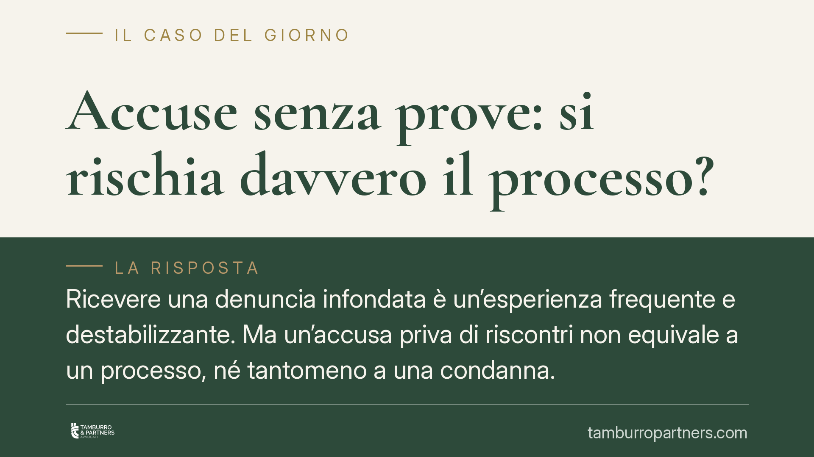

Accuse senza prove: si rischia davvero il processo?
Ricevere una denuncia infondata è un'esperienza frequente e destabilizzante. Ma un'accusa priva di riscontri non equivale a un processo, né tantomeno a una condanna. Il codice di procedura penale prevede filtri precisi per fermare le imputazioni deboli prima del dibattimento. Vediamo come funzionano e cosa può fare chi si trova indagato senza prove a suo carico.

Denuncia non significa condanna
Chiunque può presentare una denuncia o una querela. È un atto che mette in moto la macchina giudiziaria, ma non produce alcuna conseguenza automatica per la persona accusata. Tra la denuncia e un'eventuale condanna esistono più passaggi, ciascuno pensato per verificare la solidità dell'accusa.
Il primo filtro sono le indagini preliminari, condotte dal Pubblico Ministero. In questa fase si raccolgono elementi per decidere se l'accusa merita di andare avanti oppure va archiviata. Se gli elementi mancano, il PM chiede l'archiviazione al Giudice per le indagini preliminari (GIP). Il procedimento si chiude senza che l'indagato diventi imputato.
Il criterio di giudizio dopo la riforma Cartabia
Il punto oggi più rilevante riguarda la regola con cui si decide se rinviare a giudizio una persona. L'art. 425 del codice di procedura penale, nel testo modificato dal D.Lgs. 150/2022 (la cosiddetta riforma Cartabia), stabilisce che il giudice pronuncia sentenza di non luogo a procedere quando gli elementi acquisiti non consentono una ragionevole previsione di condanna.
La stessa regola vale, per i reati a citazione diretta, nell'udienza predibattimentale disciplinata dall'art. 554-ter del codice di procedura penale.
Qui sta la vera novità. Fino alla riforma, il giudice dell'udienza preliminare rinviava a giudizio salvo i casi di evidente insostenibilità o inutilità del dibattimento: bastava che l'accusa non fosse manifestamente infondata perché il processo proseguisse. Era un filtro debole, che lasciava passare anche fascicoli fragili.
Oggi il criterio è ribaltato in senso più garantista. Il giudice non deve chiedersi se il processo sia "inutile", ma se, sulla base degli atti, sia ragionevolmente prevedibile una condanna. Se la prognosi è negativa, il rinvio a giudizio non può essere disposto. La giurisprudenza di legittimità formatasi dopo l'entrata in vigore della riforma ha chiarito che si tratta di una valutazione prognostica sulla tenuta dell'accusa alla prova del dibattimento, non di un giudizio anticipato sulla colpevolezza.
Le prove non si valutano "a peso"
Un'accusa non regge solo perché qualcuno ha dichiarato qualcosa. L'art. 192 del codice di procedura penale impone al giudice di valutare le prove indicando i criteri adottati, e stabilisce che le dichiarazioni di certi soggetti — ad esempio il coimputato — vanno valutate insieme ad altri elementi di riscontro che ne confermino l'attendibilità.
In concreto: la parola del denunciante, da sola e senza alcun elemento oggettivo a sostegno, difficilmente consente una ragionevole previsione di condanna. Servono riscontri: documenti, testimonianze convergenti, dati oggettivi.
Attenzione a un equivoco: le misure cautelari sono un'altra cosa
È utile evitare una confusione ricorrente. L'art. 273 del codice di procedura penale, che richiede gravi indizi di colpevolezza per applicare una misura cautelare (ad esempio la custodia in carcere), riguarda un tema diverso dal rinvio a giudizio.
Una misura cautelare può essere disposta durante le indagini per esigenze specifiche, ma non anticipa né presuppone la condanna. Anzi, il suo standard indiziario è distinto dalla prognosi che il giudice compie per decidere se si va a processo. Chi è indagato senza gravi indizi non subisce misure; chi le subisce non per questo sarà necessariamente rinviato a giudizio.
Chi accusa il falso risponde
L'ordinamento non lascia impunito chi strumentalizza la denuncia. Chi accusa taluno di un reato sapendolo innocente commette calunnia (art. 368 del codice penale). Chi denuncia un reato mai avvenuto o simula tracce di un reato inesistente incorre nella simulazione di reato (art. 367 del codice penale). Sono ipotesi da valutare caso per caso, con l'assistenza di un difensore.
Cosa fare in concreto
- Non sottovalutate l'avviso. Se ricevete un'informazione di garanzia o un invito a rendere interrogatorio, rivolgetevi subito a un difensore: la fase delle indagini è quella in cui si costruisce la difesa.
- Raccogliete e conservate ogni elemento a discarico: documenti, messaggi, riscontri oggettivi che smentiscano l'accusa.
- Valutate con l'avvocato le memorie difensive da depositare al PM prima della chiusura delle indagini: possono orientare la richiesta di archiviazione.
- Non contattate autonomamente il denunciante o i testimoni: ogni iniziativa va concordata con il difensore.
- Se l'accusa è deliberatamente falsa, valutate un'azione per calunnia, dopo un'analisi tecnica sulla sussistenza dei presupposti.
---
Contributo informativo a cura di Tamburro & Partners Avvocati - Avv. Giuseppe Tamburro. Non costituisce parere legale.
Ogni condominio ha una storia a sé.
Se gestisci un'amministrazione e vuoi un confronto su una specifica questione condominiale, scrivi allo studio. Ti rispondiamo entro un giorno lavorativo.